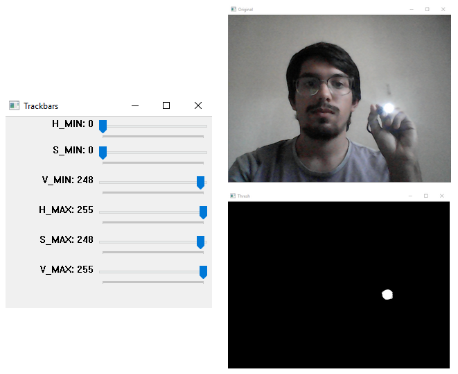

Mão na massa!
Para o desenvolvimento do algoritmo, através de pesquisas, utilizamos uma biblioteca auxiliar que
incorpora funções básicas para manipulação de imagens já implementadas no OpenCV,
porém com uso mais prático para Python, a imutils (link para o GitHub).
Primeiramente, utilizamos um script existente na biblioteca imutils, chamado de
range-detector, que permite
determinar através de uma trackbar o intervalo de tons nos modelos RGB ou HSV do objeto que queremos
identificar no video. Dessa forma,
realizamos um teste com a lanterna apontada para a câmera e chegamos aos valores mínimo e máximo de tons
em HSV que o objeto ao qual pretendemos identificar
poderá ter na captura. A imagem abaixo, mostram como o teste foi realizado:

Assim, os parâmetros HSV mínimo e máximo foram definidos de forma que na máscara da imagem mostrada na
janela "Tresh",
estivesse aparecendo apenas o objeto que queremos identificar.
O modelo de cor HSV foi escolhido ao invés do usual RGB, pois, para cada tom ou (Matiz), quantidade
(Saturação) e intensidade (Brilho) de cor existe um número específico,
e assim, conseguimos definir exatamente o tipo de bola brilhante que queremos identificar.
Agora que encontramos os parâmetros desejados, vamos começar o código:
Importamos todos os pacotes qe bibliotecas que precisamos utilizar e a estrutura
deque importada de collections, foi utilizada para representar uma fila que irá
armazenar as várias posições do centro do objeto identificado ao longo do vídeo, fazendo com que sua
trajetória
seja desenhada.
from collections import deque
from imutils.video import VideoStream
import argparse
import cv2
import imutils
Agora, inicializamos os parâmetros necessários, sendo minHSV e maxHSV as variáveis que contêm os valores encontrados no range-detector, pontos é a lista de pontos que serão desenhados na imagem, com valor máximo atribuído de 500, e vs é a variável que vai receber os frames da captura do vídeo.
#define o intervalo de tons HSV que poderão ser detectados
minHSV = (0,0,248) #valor minimo do intervalo
maxHSV = (255,248,255) #valor maximo do intervalo
pontos = deque(maxlen=500)
vs = VideoStream(src=0).start() #recebe os frames da captura
O próximo passo é iniciar o loop que será terminado ao pressionar a tecla "s" e será a parte principal
do algoritmo, responsável por identificar o objeto e desenhar os pontos em que ele aparece na tela.
while True:
frame = vs.read() #pega o frame atual
# se não conseguir capturar o frame, encerre o programa
if frame is None:
break
frame = imutils.resize(frame, width=600) #redimensiona o frame para facilitar o processamento da imagem
blur = cv2.GaussianBlur(frame, (11, 11), 0) #desfoca o frame para reduzir os ruidos
HSV = cv2.cvtColor(blur, cv2.COLOR_BGR2HSV) #transforma o sistema de cores de RGB para HSV
A função read chama o método de leitura do ponteiro da câmera, já resize, redimensiona o frame, para que a velocidade de processamento aumente, em seguida ele é desfocado com a GaussianBlur, para diminuir o ruído, e por fim, convertemos o frame para o espaço de cores HSV, para facilitar a obtenção da intensidade do objeto desejado.
mascara = cv2.inRange(HSV, minHSV, maxHSV) #cria a mascara para encontrar a cor que se deseja
#remove possiveis falhas da mascara
mascara = cv2.erode(mascara, None, iterations=2)
mascara = cv2.dilate(mascara, None, iterations=2)
A função inRange cria uma máscara com o objeto que queremos identificar, no caso a luz do led, levando em consideração os limites inferior e superior do HSV. Logo após a máscara passa por um processo de erosão e dilatação para remover possíveis borrões.
# encontra o contorno do circulo no frame atual atraves da mascara e marca os pontos (x,y) do seu centro
contornos = cv2.findContours(mascara.copy(), cv2.RETR_EXTERNAL,
cv2.CHAIN_APPROX_SIMPLE)
contornos = imutils.grab_contours(contornos)
centro = None
findContours é uma função para encontrar os contornos de uma imagem binária. O primeiro parâmetro mascara.copy(), deve ser sempre uma imagem na escala de tom de cinza, o cv2.RETR_EXTERNAL representa o modo de recuperação dos contornos, recuperanado apenas aqueles que são externos extremos. O parâmetro cv2.CHAIN_APPROX_SIMPLE, refere-se ao método de recuperação do contorno, este utilizado tem a função de comprimir segmentos horizontais, verticais e diagonais e deixa apenas seus pontos finais. Por exemplo, um contorno retangular à direita é codificado com 4 pontos.
#se ao menos um contorno foi encontrado
if len(contornos) > 0:
c = max(contornos, key=cv2.contourArea) #encontra o circulo com maior contorno na mascara
#calcula o contorno minimo que envolve o maior circulo
((x, y), raio) = cv2.minEnclosingCircle(c)
#calcula as coordenadas (x,y) do centro
M = cv2.moments(c)
centro = (int(M["m10"] / M["m00"]), int(M["m01"] / M["m00"]))
Inicialmente verifica se pelo menos, um contorno foi encontrado, em seguida c recebe o maior contorno da
lista.
A função moments é utilizada para calcular o centróide em cada frame, em que os valores das
posições x e
y são padronizados, segundo a documentação do OpenCV, e Cx = m10/m00 e Cy =
m01/m00.
Em seguida, verificamos se o raio detectado tem tamanho razoável para ser desenhado, caso sim, é
desenhado um círculo amarelo em volta dele, depois, as coordenadas do seu centro são adicionadas na
lista de pontos, pela esquerda, através do método appendleft.
Depois dessas verificações, percorremos cada ponto da lista, até que ela esteja vazia, desenhando uma
linha entre a posição atual do objeto no frame e a anterior.
Por fim, o algoritmo imprime os frames desenhados na tela e permanece no loop até que seja digitada a
letra "s". Abaixo, segue o código para estes últimos passos:
#percorre a lista de pontos
for i in range(1, len(pontos)):
# se o ponto atual e o anterior forem nulos, ignore
if pontos[i - 1] is None or pontos[i] is None:
continue
# desenha a linha de acordo com os pontos que estão na lista
larguraLinha = 10
cv2.line(frame, pontos[i - 1], pontos[i], (0, 255, 0), larguraLinha)
invertida = cv2.flip(frame, 1) #inverte o frame horizontalmente
cv2.imshow("Frame", invertida) #imprime o frame
#encerra o algoritmo se teclar 's'
key = cv2.waitKey(1)
if key == ord("s"):
break
#fecha todas as janelas
cv2.destroyAllWindows()
Resultado
O resultado, você pode conferir no GIF logo abaixo!